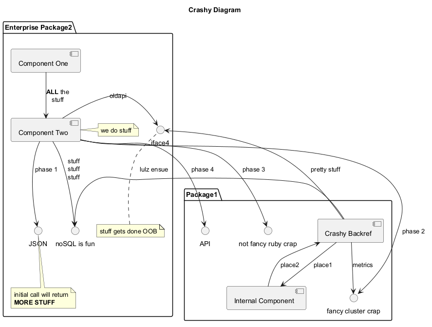

@startuml
skinparam svek true
title Crashy Diagram
package "Package1" {
() "API" as iface1
() "not fancy ruby crap" as iface2
() "fancy cluster crap" as iface3
[Crashy Backref] --> iface3 : metrics
[Crashy Backref] -> [Internal Component] : place1
[Internal Component] --> [Crashy Backref] : place2
}
package "Enterprise Package2" {
() "iface4"
() "noSQL is fun" as iface5
() "JSON"
[Component One] as comp1
[Component Two] as comp2
comp2 -> iface4 : oldapi
[Crashy Backref] -> iface4 : pretty stuff
comp2 --> iface5 : stuff\nstuff\nstuff
note right of comp2
we do stuff
end note
note bottom of iface4
stuff gets done OOB
end note
comp1 --> comp2 : <b>ALL</b> the\nstuff
comp2 --> JSON : phase 1
comp2 --> iface1 : phase 4
comp2 --> iface2 : phase 3
comp2 --> iface3 : phase 2
note bottom of JSON : initial call will return\n<b>MORE STUFF</b>
[Crashy Backref] -> iface5 : lulz ensue
}
@enduml